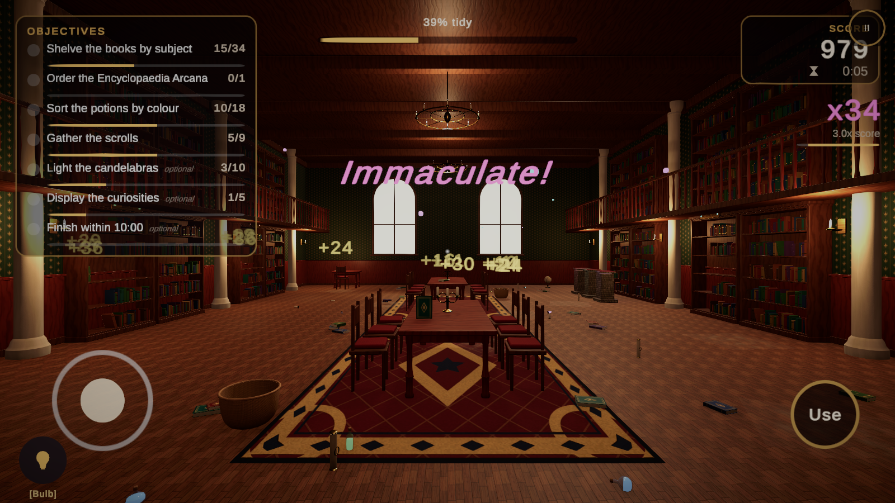

Input: Keyboard, Gamepad & Touch
One input abstraction feeds every gameplay system, so the same code runs with a mouse, a controller or a finger.
How input flows
TidyInputReader wraps an InputActionAsset (the framework ships Settings/TidyUpInputActions) and exposes a frame-stable view through ITidyPlayerInput: Move, LookDelta (in degrees), Interact pressed/held, Drop, Throw, Rotate axis and steps, Inspect, Sprint, Crouch, Hint, Pause, and an optional pointer aim position for touch. Gameplay code only reads this interface. On-screen controls feed the same reader through SetVirtualMove, AddVirtualLookPixels, TriggerVirtual and RegisterTap.
The reader detects the active scheme from the last device used and raises SchemeChanged. Prompts, the controls screen and the mobile overlay react to it. Players can force a scheme in Settings.
Keyboard & mouse
| Action | Binding |
|---|---|
| Move | WASD / arrows |
| Look | Mouse |
| Pick up / Place / Clean (hold) | LMB or E |
| Drop | RMB or G |
| Toss | F |
| Rotate held object | Scroll wheel (15° steps), Z / C |
| Inspect | R or middle mouse |
| Hurry / Crouch | Shift / Ctrl |
| Hint | H |
| Pause / Back | Esc |
Gamepad
| Action | Binding |
|---|---|
| Move / Look | Left stick / Right stick |
| Pick up / Place / Clean | South (A / Cross) |
| Drop / Back | East (B / Circle) |
| Inspect | North (Y / Triangle) |
| Rotate | Left / Right shoulder |
| Toss | Right trigger |
| Hint | D-pad up |
| Hurry / Crouch | Left stick press / Right stick press |
| Pause | Start |
All menus are navigable with a gamepad: each screen selects a sensible first element, settings rows use left/right selectors, and East closes the top screen.
Mobile touch

| Gesture | Result |
|---|---|
| Drag on the left | Floating virtual joystick (full deflection = hurry) |
| Drag on the right | Look around |
| Tap on an object | Pick it up (aims at the tapped point, not the screen centre) |
| Tap on a shelf while holding | Place at the tapped spot |
| Press and hold | Scrub a cleanable surface |
| Buttons | Use, Drop, Look (inspect), rotate left/right, Pause |
The overlay (TidyMobileControls) shows only when the touch scheme is active, and held-object buttons show only while something is held. TidySafeArea keeps the HUD clear of notches.
Input prompts
Never hard-code key names in UI. Write tokens instead and let TidyInputPrompts substitute the right label for the current device:
"{Interact} Pick up {Drop} Drop"
Keyboard: [LMB] Pick up [RMB] Drop
Gamepad: [A] Pick up [B] Drop
Touch: [Tap] Pick up [Drop] DropUse the TidyPromptLabel component on any TextMeshPro text, or call TidyInputPrompts.Format(template). Labels come from the TidyInputPromptDefinition asset when provided, otherwise from the binding display names of the action asset, so rebinding keeps prompts correct. The key template (default <b>[{0}]</b>) can wrap labels in rich text or TextMeshPro sprite tags for glyph icons.
Replacing input
Implement ITidyPlayerInput on your own component and register it with TidyServices.Register<ITidyPlayerInput>(this). The interactor, player controller, hints, pause menu and tutorial will use it. To add actions keep the action names defined in TidyInputActionNames.